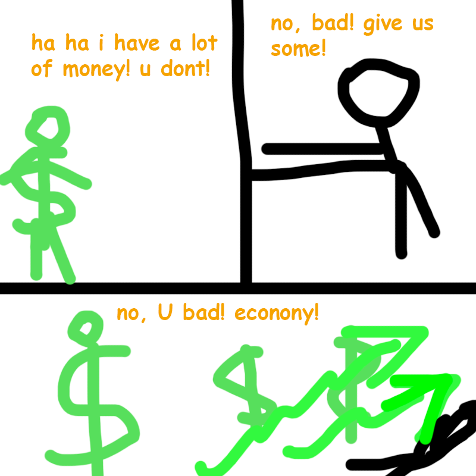
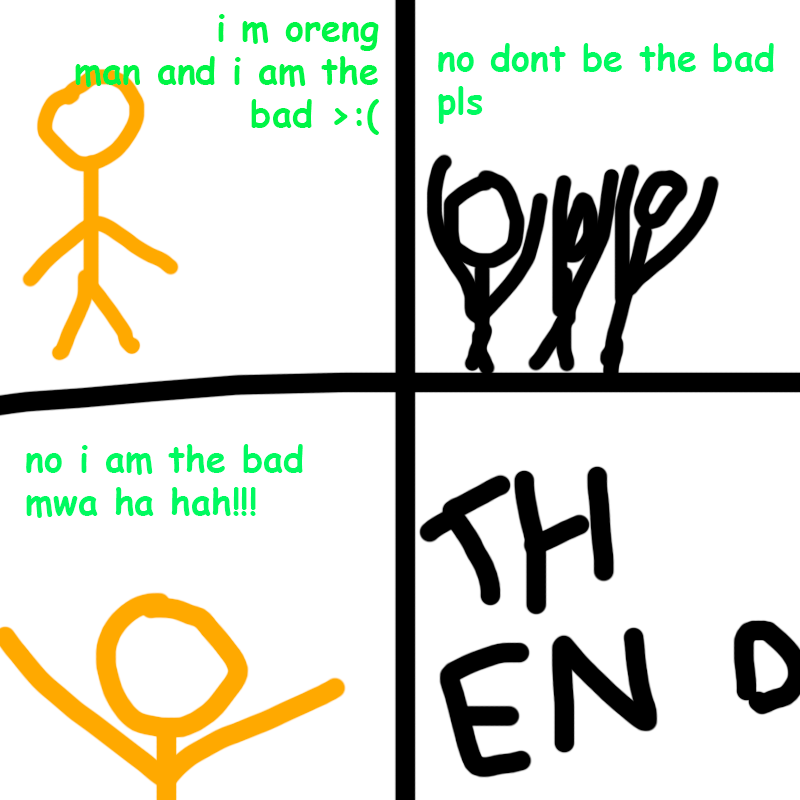

Fren Barriston was the original comic author. His work helped lead other people into the art of cartoons, and has brought SKNN to where it is today.
i had to draw the comics because fren was lazy. there were far more comics than this but i was never bothered to draw them.
Back to index

#4, episode 2

#3, episode 2

#2, episode 1

#1, episode 1
this website is best viewed with Ned's Escape